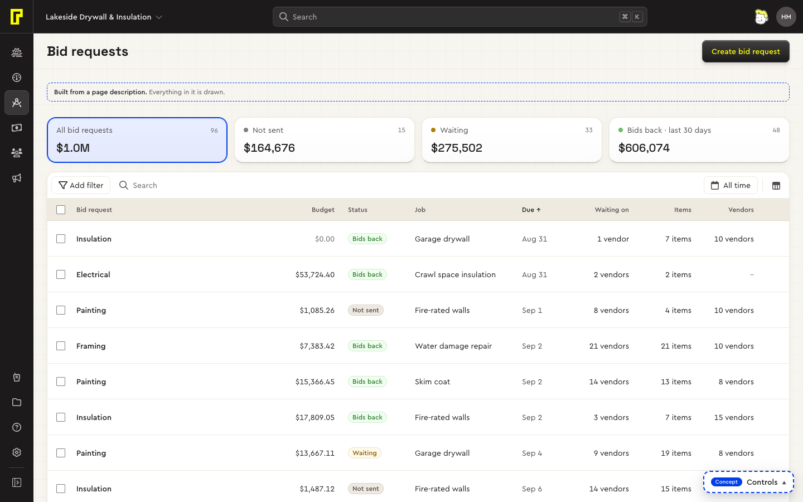
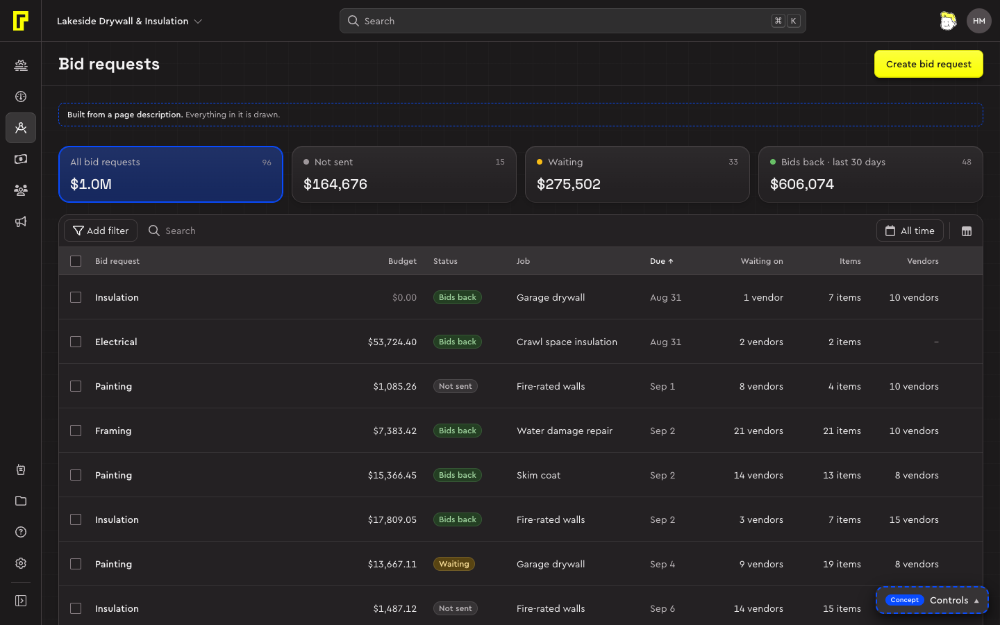
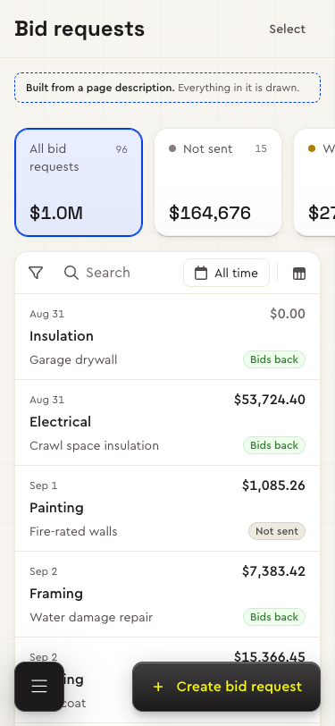
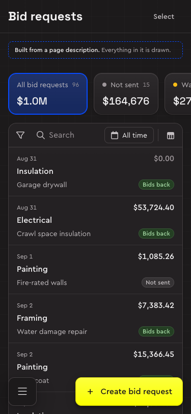

Lists are Bolster's workhorse: the audit found the same page behind clients, leads, estimates, jobs, invoices, items, vendors, bid requests, expenses, vendor orders and users. The system has one list page for all of them. It's the most settled page type, and the only one built by a recipe: a list is a description, not new code.


Try it: the list concept (jobs, invoices, customers and the catalog) and the list page specimen.
Who it's for
Office staff, estimators and project managers, most of their day. They come to a list for one of two things, and the page serves both:
- To work through rows: send the vendor orders that are ready, chase the invoices that are overdue, open the job that's next. These lists open a row straight into its own window.
- To check how things stand: how much is owed, which vendors are missing documents. These lists peek: the record opens beside the list, which keeps its place.
Which one a page is comes from what the thing is, not from the page (D69): a thing with its own full-screen window (a job, a vendor) opens it from the row.
Parts
Four bands, top to bottom, plus the record. Each control lives in the band of the question it answers.
| Part | What it holds | Built from |
|---|---|---|
| Page header | The title (the menu item's name, D28), Export where the page has it, and one Create named for the noun (“Create job”). On phones Create floats above the tab bar and Select takes its place. | App shell, Button |
| Summary | KPIs (up to four figures, the default) or the lifecycle (All and every status), never tabs (D67). | Summary cards |
| Table card | Its header (Add filter, search, the date range, display settings), the chips once something is set, the table, the footer that loads more. | Toolbar, Chip, Data table, Card |
| The record | One row's details: status, amount, activity, two actions and More, the fields. Beside the list from 1280 wide, a side sheet below. | Record |
| Floating bar | Bulk actions once rows are ticked: the count, Select all, three slots, then More. | Floating bar |
| Menus and states | Filters, display settings and row actions (bottom sheets on phones); loading, empty, no results and error inside the table card. | Menu, Popover, States |
The patterns it follows: Opening records, Filtering, Bulk actions, Picking dates, Nested menus and Page scrolling. The arrangement itself is system/patterns/list-page.css.
Behaviour
| What | How |
|---|---|
| Opening a row | A click anywhere on the row, or Enter on its name, which is a real link (D17). A thing with its own window opens it, and the row's ··· menu offers Open (“Open job”) then Quick look, the record beside the list. Anything else peeks. Checkboxes never open (I6). |
| Selecting | A checkbox in the first cell, Shift-click for a range, the header's checkbox for all. Only lists with bulk actions have checkboxes. The floating bar appears with the first tick; rows never move. |
| Narrowing | Add filter, then a value: each becomes a chip with ×. Search turns its words into a chip on Enter. A summary card that's a slice filters too, and adds its chip. The count is said once, by the filters: “23 of 132 jobs”. |
| Scrolling | The page scrolls, never the card (D128). The title scrolls away; scrolling down hides the top bar and the card header, a little back up brings them back in 300 ms. The column header sticks under them. A table wider than the screen scrolls sideways, the checkbox and name pinned. |
| Columns | Each column is as wide as the widest value it can ever hold across the whole list; only the first truncates. Sorting or loading more never moves a column. |
| Live areas | What updates while you act elsewhere (cards, counts, the table) changes its values, never its layout (I13). |
| Phones | Rows have four corners: number and date, amount, the name across the full width, where and status (D32). No checkbox column: Select, or a long press, starts selecting. Menus open as bottom sheets. |
The recipe
A list page isn't drawn by hand. Two short files say what's true, and the rules decide the page from them (D31, D56):
- The model (
system/model/<thing>.json) says what exists, with nothing about pages: the thing's noun, how people name one, its fields and their types, its lifecycle with each status's next step, its actions, whether it has its own window, and the open questions, each with its evidence. One per thing, shared by every page that shows it. - The intent (
pages/list/<nav>.intent.json) says what one page is for: who comes, what they come to do (which give the cards and the pinned filters), the key figure, what they look at after the name, the opening sort, and what the source showed that the system decides instead.
The builder writes the page's description from the two, every choice with its reason; the description is output and never edited. The checker fails a description that breaks a rule. The renderer draws it in the list concept.
The files
| File | What it is |
|---|---|
system/recipes/list/rules.json | The 27 rules (L-source, L-row-click, L-summary, L-filters…), the 19 column types with their alignment, format, sort, filter and phone place, the survey's questions and what's dropped by design. Every rule is decided, names its sources (a D- or I-entry, a research board, a review) and says what enforces it: the schema, the checker, the renderer or the survey. |
system/recipes/list/schema.json | The shape of a page description: columns, status, summary, search, filters, sort, row click, selection, create, actions, the record. |
system/recipes/list/intent.schema.json | The shape of an intent. The model's is system/model/schema.json. |
system/recipes/list/build.mjs | Reads an intent, its model and the shared kinds, applies the rules, writes pages/list/<nav>.json. |
system/recipes/list/check.mjs | Prints each description's errors, warnings and what a reviewer should look at; exits 1 on any error. |
pages/survey.html?p=<nav> | The page's open questions as a form, each starting on what the page assumes until someone answers (D64). |
| The rules page | Every rule, type and question, generated from rules.json. |
Making a list
- Read the source (a live page, a screenshot, a brief) for meaning: what the things are, how they move, what people do and look for first. How it looks is left behind (L-source).
- Write the thing's model, or add to it. A category lists its values in the product's words (D63); a value the source doesn't show is an open question.
- Write the page's intent.
- Build and check it:
node system/recipes/list/build.mjs pages/list/vendor-orders.intent.json node system/recipes/list/check.mjs pages/list/vendor-orders.json - Answer what the evidence couldn't settle in the survey, and build again.
- Run
npm run pages: it rebuilds every page, checks every description and lists what changed in each, field by field (D65).
What the rules decide
- The summary: the lifecycle when the page's tasks act on two statuses or more (vendor orders: Not sent, Awaiting approval, Approved, Paid in the last 30 days), KPIs otherwise (expenses: Unpaid, Submitted by vendors) (D67).
- What a click does: the model's window, if it has one (D69). Never asked.
- Columns: every column has a type and a priority; the name is priority 1 and leaves last. A type fixes the alignment, the format, which way it sorts first and its filter (D44).
- No buttons on rows: a row's next step leads its record and its ··· menu (D43).
- Sample data tells each row's story from the lifecycle: dates in order and never after today, a step not reached left empty, every status covered, one name in twelve long (D62).
Built so far




| Page | Model | How it's made |
|---|---|---|
| Vendor orders | vendor-order | Model and intent, the pilot |
| Expenses | expense | Model and intent |
| Subs and vendors | vendor | Model and intent |
| Bid requests | bid-request | Model and intent |
| Tasks | task | Model and intent, kept to compare with the to-do list |
| Jobs, invoices, customers, catalog | Hand-written in the concept; their descriptions are in system/recipes/list/concept/ |
Principles
- One control for one job. Bolster's filter cards both counted and filtered while the real filters hid behind an icon; here the summary summarises, the toolbar narrows, display settings arrange.
- Rows open, ··· acts. One click opens a row; its actions sit in ···, shown on hover and focus. Bolster's rows selected on a click and opened on a double click, and a keyboard could do neither.
- Selection never moves the rows. The bulk bar floats; the risky action goes last, behind a confirmation that names the number.
- Every state is designed: loading, first-use empty, no results and error, each filling the table card at the same size.
- Explanations use the screen's own words (D27): an info note names cards, statuses and columns exactly as the screen does.
Open questions
- The jobs list's insight card scrolls out of view below about 1,300 wide: move it first, or drop it on narrow screens?
- Summary cards are single-choice; should they add to a multi-select status filter instead?
- Rows load as you scroll and on Load more; is one of them enough?
- Create scrolls away with the page title: keep a compact Create in the card header once you're into the list?
- Which of Bolster's other situational bars the floating bar replaces first.
Every variant and state
Its specimen, live: the same markup and CSS a page uses, working (point, press, type), in this page's theme.
system/specimens/list-page.html, the component's workbench · Open it on its ownWhat's still open
- The chips row pushes the table down when the first filter is added (I13).
Decisions and contracts
- D17Lists are tables with row linksDecided
- D28The page title is the menu item's nameDecided
- D29On phones, Create floats above the tab barDecided
- D30A row click either peeks or opensDecided
- D31Pages are described, and the rules are written onceProposed
- D32Phone rows have four corners and an unbroken nameDecided
- D43No buttons on rows: a row's next step leads its recordDecided
- D44Column types and priorities are decided, and the renderer follows them to the letterDecided
- D56Sources are read for meaning; pages are built from a model and an intentDecided
- D62Sample data tells each row's story, from the modelDecided
- D63A category's values are the model'sDecided
- D64The survey is a formDecided
- D65Checks that run themselvesDecided
- D67A summary is KPIs, or the lifecycleDecided
- D69A thing with its own window opens it from the rowDecided
- D128The page is the one scrollerDecided
- I6Opening and selecting list rows
- I13Live areas keep their shape
- I23Page scrolling